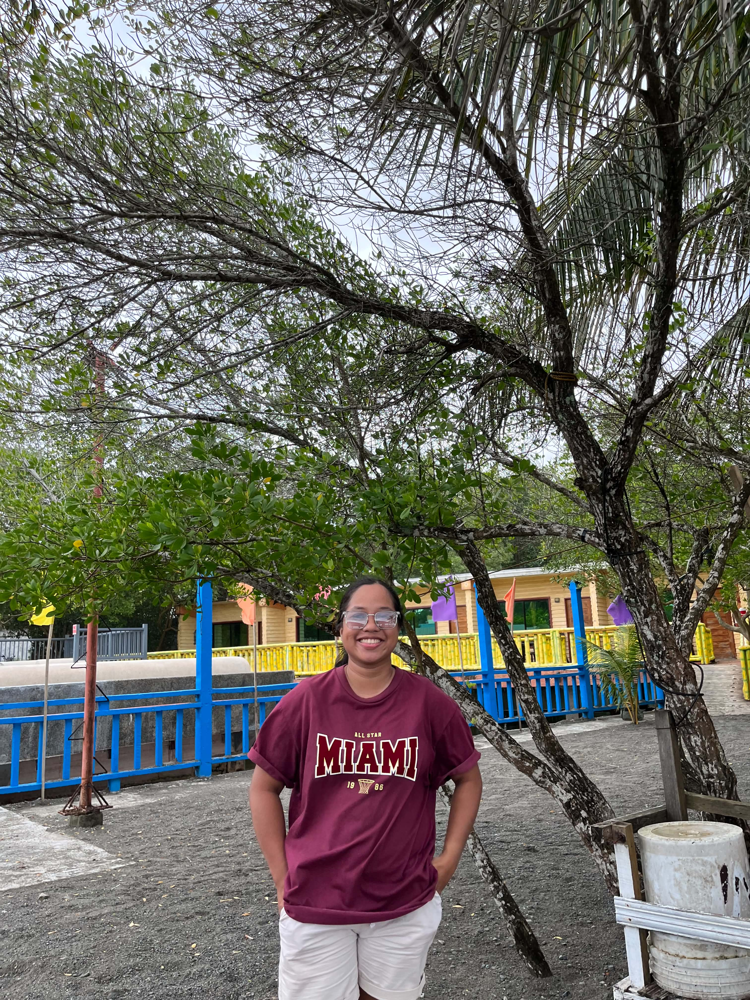

IT 110 Midterm Project
SkyTrack Weather Tracker is a web application that retrieves real-time weather information from a public API. Users can search any city worldwide and instantly view temperature, humidity, wind speed, and weather conditions.
Frontend Developer
Responsible for HTML Structure & Semantics
UI/UX Designer
Responsible for CSS Styling & Layout

JavaScript Developer
Responsible for API Integration & Logic